Quiz de soirée · gratuit · auto-hébergé
Le quiz de la soirée, sur ton téléphone.
Un écran pour la salle, un téléphone pour chacun. Tes invités scannent un QR code, choisissent un prénom et un avatar, et jouent : rien à installer, aucun compte à créer.
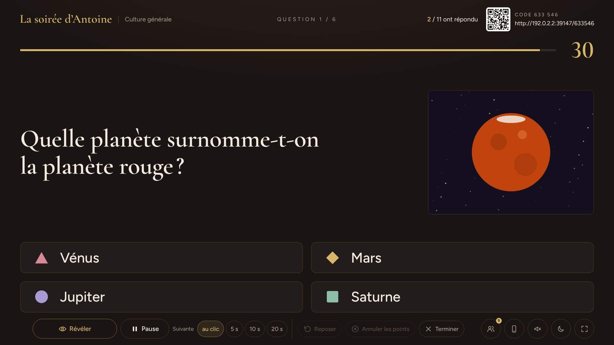
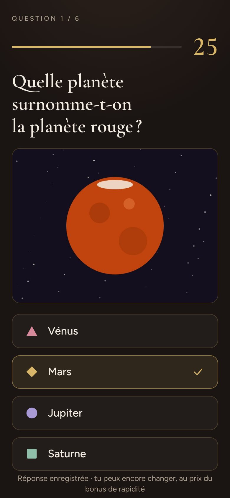
Avant
Un quiz prêt avant que la sonnette retentisse
Tu écris tes questions dans le navigateur, ou tu laisses FiestApp composer un quiz pour toi. Puis tu branches la télé, et la salle d'attente s'ouvre.
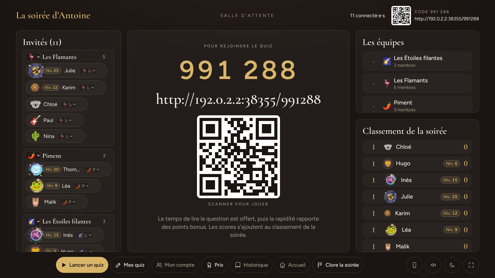
Un quiz tout prêt, d'un geste
Choisis des catégories, une difficulté et un nombre de questions : FiestApp tire un quiz dans sa base de 21 887 questions relues, chacune avec son anecdote. Tu le retouches à ton goût, ou tu le lances tel quel.
Ou tes questions à toi
L'éditeur garde tout ce que tu tapes, même si le serveur s'endort. Une photo, un extrait sonore, une anecdote pour la révélation, une note que toi seul lis à la télécommande.
Des quiz qui voyagent
Des modèles pour un anniversaire, un mariage ou Noël en famille ; une liste à coller, écrite par un ami ou par une IA ; un fichier à exporter, un code pour partager une copie.
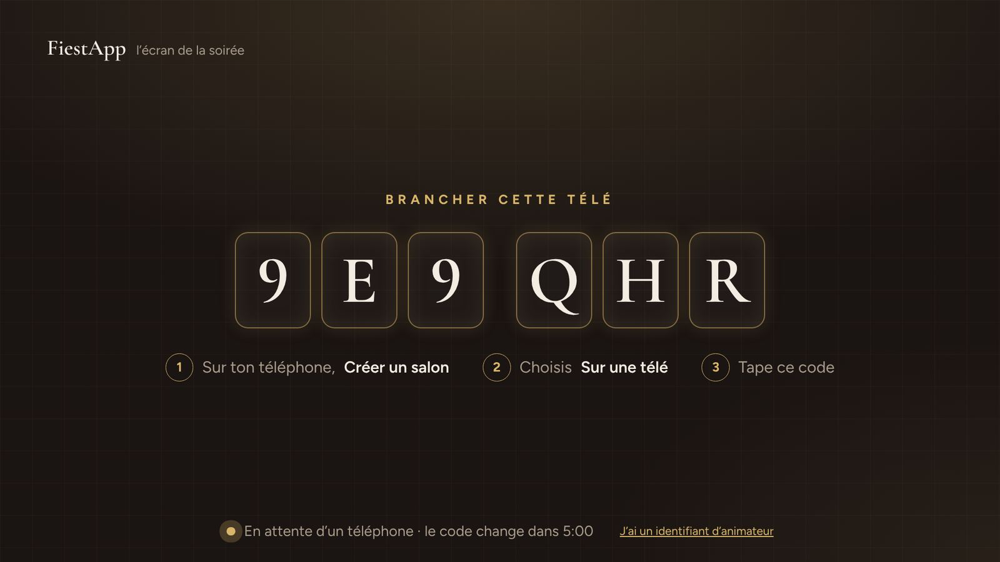
La télé se branche d'un code
Pas de câble à tirer depuis l'ordinateur : la télé affiche un code, tu le tapes depuis ton téléphone, et elle devient l'écran commun de ton salon.
Les équipes se préparent avant
Crée les équipes, leurs noms et leurs emojis ; chaque invité choisit la sienne en arrivant, ou tu les répartis toi-même.
Pendant
Une question, toute la salle
La question s'affiche en grand sur la télé, les réponses arrivent sur les téléphones. Le temps de lire est offert, puis la rapidité rapporte des points bonus.
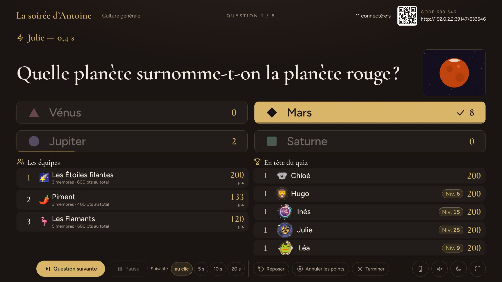
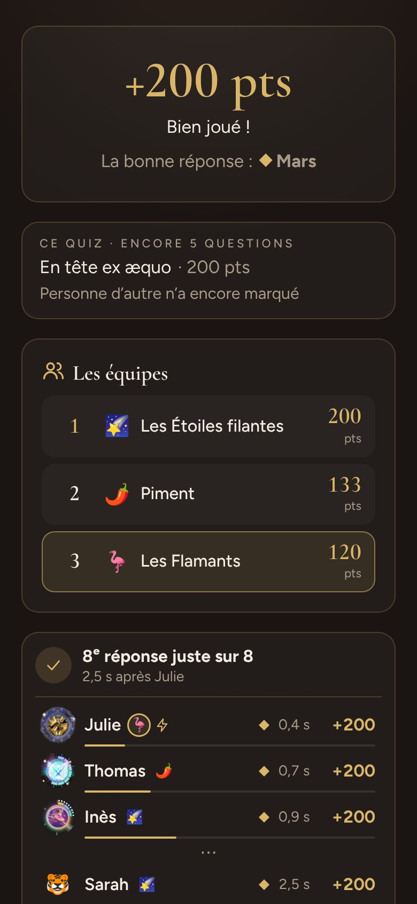
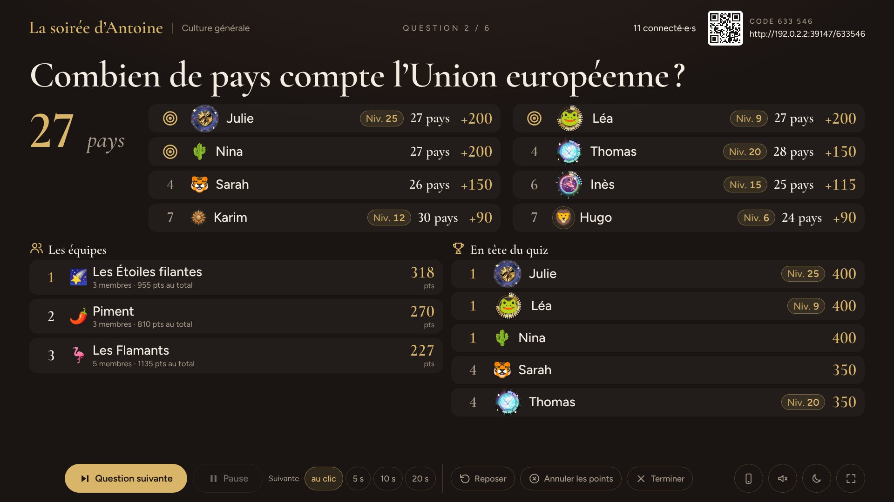
L'animateur garde la main
Révéler, mettre en pause, reposer une question, annuler ses points, terminer. L'enchaînement se règle d'un toucher : au clic, ou toutes les 5, 10 ou 20 secondes.
Animer debout
Ton téléphone devient la télécommande : tu révèles depuis le canapé, tu joues avec les autres, ou tu animes seulement, hors classement.
En équipe et chacun pour soi
Un classement par équipe, à la moyenne, et un classement des joueurs, à chaque question et sur toute la soirée.
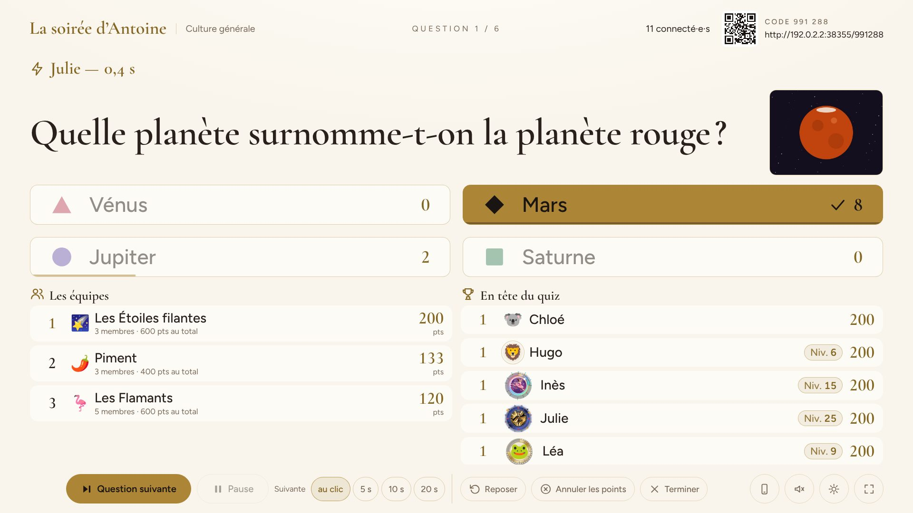
Lisible à cinq mètres
Une serif généreuse pour la question, une forme pour chaque réponse en plus de sa couleur, et un écran qui tient sur le portable branché à la télé comme sur un grand écran.
Une coupure n'arrête rien
Un téléphone qui s'éteint retrouve sa place en se rallumant. Un serveur qui redémarre reprend la question là où elle en était.
Après
Une fin qu'on garde
Un podium, des prix, des hauts faits. Puis chacun repart avec sa fin de soirée sur son téléphone, et un lien pour s'en souvenir.
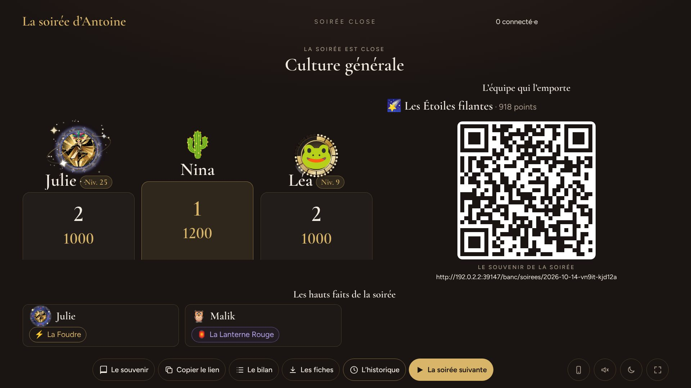
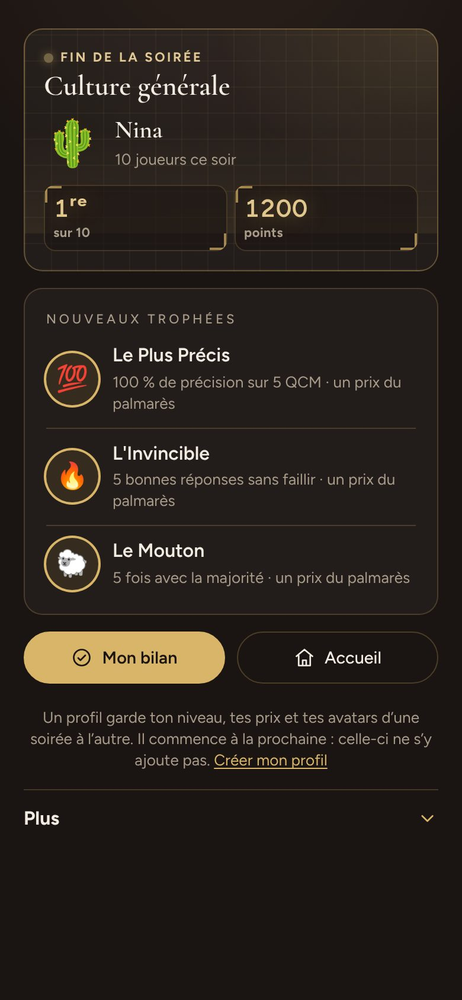
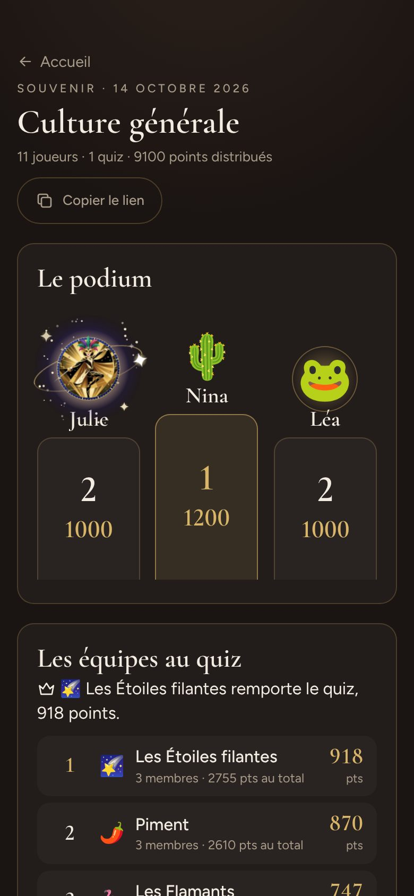
Le souvenir
Une page à partager dans le groupe : le podium, le palmarès, les équipes et tous les chiffres. Sans compte, par son lien.
L'historique
Chaque soirée close se range seule, avec son souvenir et son bilan, à une adresse qui ne change plus.
Le bilan, question par question
Chacun relit ses réponses à côté des bonnes. L'animateur y trouve une page à imprimer par invité, et l'export de toute la soirée.
Les prix
L'Éclair, Le Cancre Magnifique, Le Mouton… Le palmarès se calcule tout seul, et l'animateur remet ses prix à l'écran pour le plaisir.
Même sans compte
Nina a gagné la soirée sans profil. Sa fin de soirée lui propose d'en créer un : dès la prochaine, il gardera son niveau, ses prix et ses avatars.
Entre deux soirées
Le jeu continue dans la poche
Avec un profil, FiestApp se joue aussi seul, chaque jour, et contre ses amis. L'application s'installe sur l'écran d'accueil, sans passer par un store.
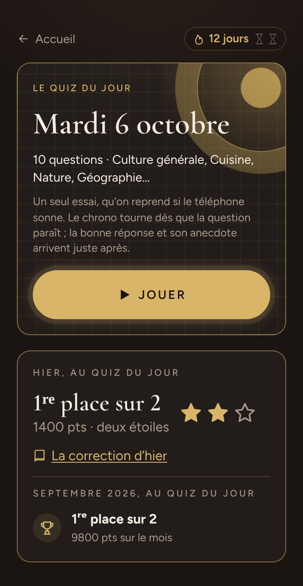
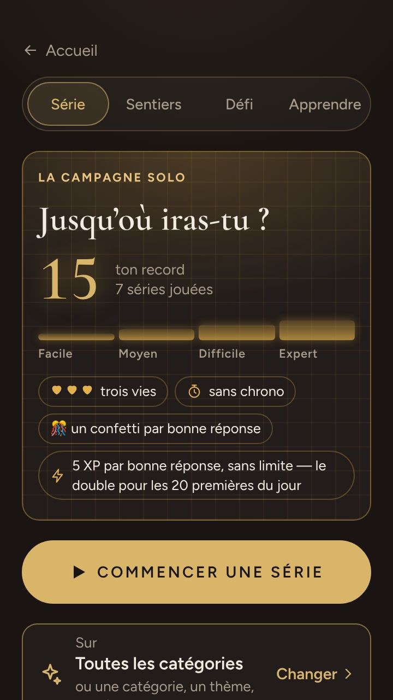
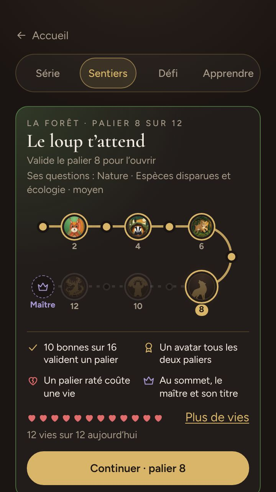
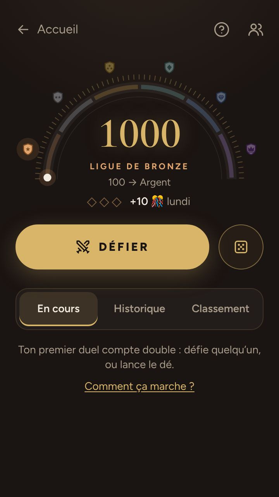
Ce qu'on gagne
Un profil qui se porte
Des niveaux, des finitions autour de l'avatar, des trophées, des médaillons peints. Rien de tout cela ne fait gagner un point : un profil raconte, il n'avantage pas.
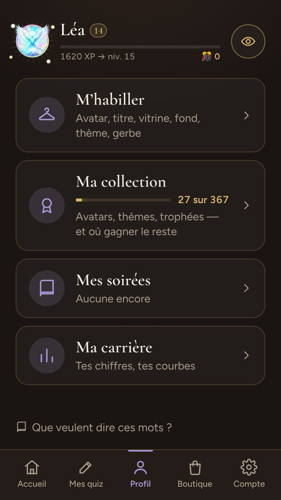
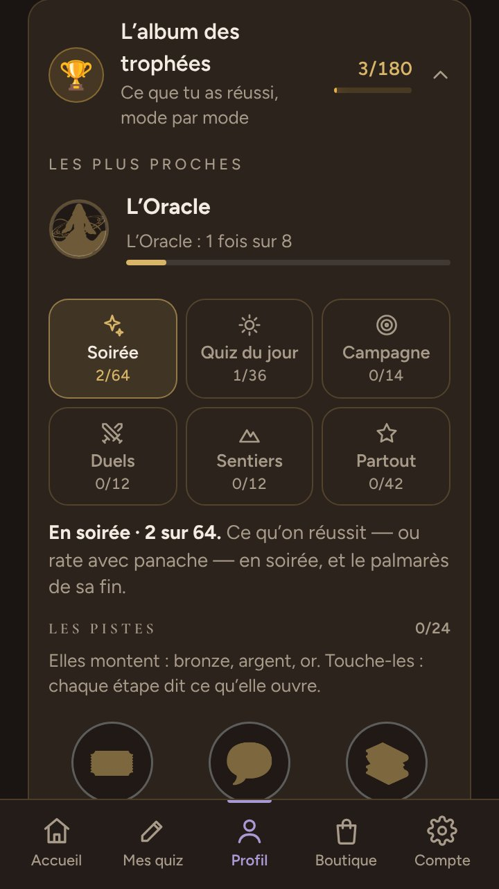
Une expérience qui se mérite
En soirée, rien pour la simple présence : tout se gagne dès deux joueurs, en répondant bien, et rien ne redescend en cours de route. Le quiz du jour et la campagne rapportent aussi.
La loge
On essaie, on voit le résultat sur sa carte, puis on porte tout d'un coup : avatar et finition, titre, vitrine, fond, thème, gerbe.
Ma collection
Tout ce qui se gagne au même endroit : les avatars, l'album des trophées — mode par mode, chaque piste du bronze à l'or et ce que chaque étape ouvre —, et le style. Ce qu'on a, ce qui reste, et où le gagner.
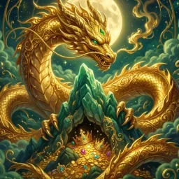
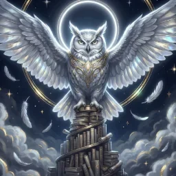
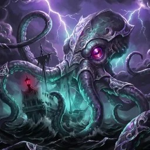
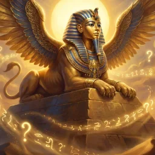
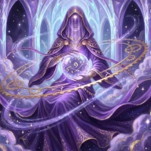
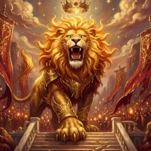
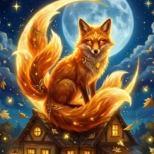
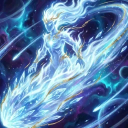
Douze des vingt-six avatars légendaires. Ils se méritent sur la durée, en soirée, au quiz du jour ou en campagne, et ce qui est gagné reste gagné.
Au-dessus des légendaires
Six Divins
Leurs noms sont publics. Leurs règles ne sont écrites nulle part ailleurs que sur le serveur : ni dans la page, ni dans ce que ton téléphone télécharge. Quand l'un d'eux descend pendant une soirée, toute la salle l'apprend à la clôture.
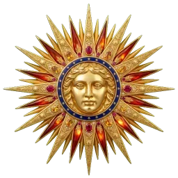
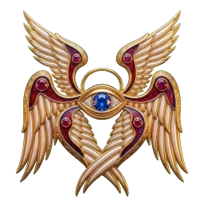
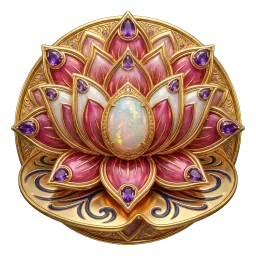
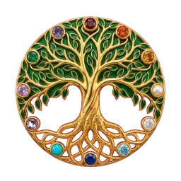
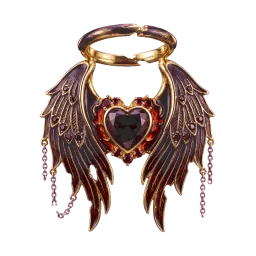
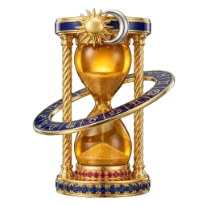
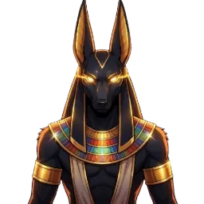
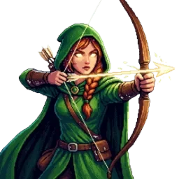
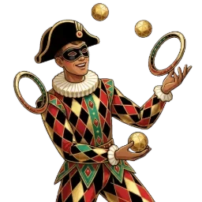
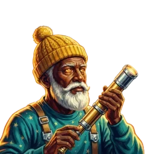
Soixante-douze portraits
Les avatars du savoir, six par branche, se gagnent en avançant sur les sentiers.
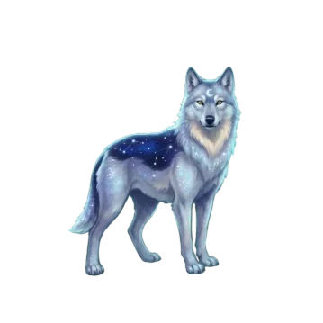
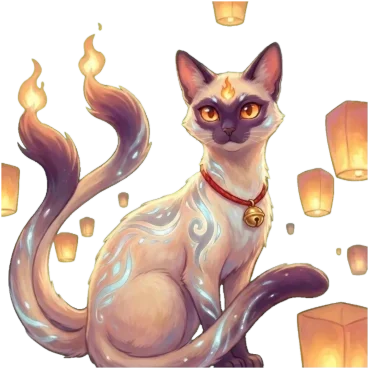
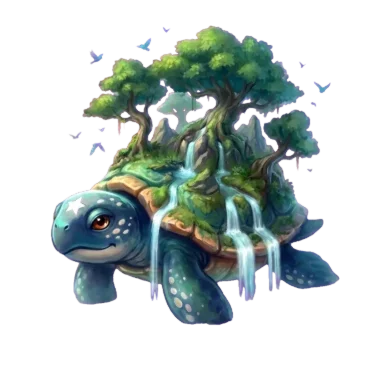
Des compagnons qui grandissent
Achetés en confettis, ils changent de forme au fil des bonnes réponses données en les portant. Une forme atteinte ne se perd jamais.
Les partis pris
Ce qui ne bougera pas
Jouer sans compte, toujours
« Jouer sans compte » est le premier bouton de l'entrée. Un profil s'ajoute à ce chemin, il ne le remplace jamais, et un invité anonyme n'affiche jamais un niveau zéro.
Le serveur décide
Les écrans ne reçoivent que ce qu'ils doivent montrer : la bonne réponse n'arrive sur aucun téléphone avant la révélation.
Rien ne se perd
Chaque réponse est recopiée dans une base qui survit aux redémarrages ; une soirée interrompue reprend où elle en était.
Zéro euro, zéro e-mail
Un hébergeur et une base en offre gratuite. Le profil ne demande ni adresse ni téléphone : un code de secours suffit.
Chacun chez soi
Plusieurs animateurs partagent un serveur : chacun son espace, ses quiz, ses soirées, et rien ne passe chez le voisin.
Pour toute la famille
Des formes en plus des couleurs, des écrans pensés pour les lecteurs d'écran, et des emojis que même une vieille télé sous Windows 10 affiche.
Sous le capot
Petit, solide, et vérifié à chaque modification
Node.js et Socket.io côté serveur, React et Vite côté navigateur, SQLite pour la partie en cours et une base libSQL hébergée chez Turso pour tout ce qui doit durer. Très peu de dépendances, et c'est voulu.
Toute la logique du jeu vit sur le serveur. Les journaux de chaque soirée se gardent tels quels, et les pages se recalculent à partir d'eux : une amélioration d'aujourd'hui profite aux soirées passées.
À chaque proposition de modification, l'intégration continue vérifie les types, lance les tests, construit l'application et rejoue une soirée entière sur un vrai serveur.
- 200+
- fichiers de tests, la plupart sur leur propre serveur jetable
- 160+
- routes HTTP, chacune dans la documentation
- 2
- bases : une locale, jetable, pour la partie en cours ; une permanente pour tout ce qui doit durer
- 1
- soirée entière rejouée à chaque modification
Lancer FiestApp chez toi
Il faut Node 20 ou plus récent. Deux commandes, puis l'adresse locale : l'écran commun d'un côté, ton téléphone de l'autre.
$ npm install $ npm run dev # puis http://localhost:5173